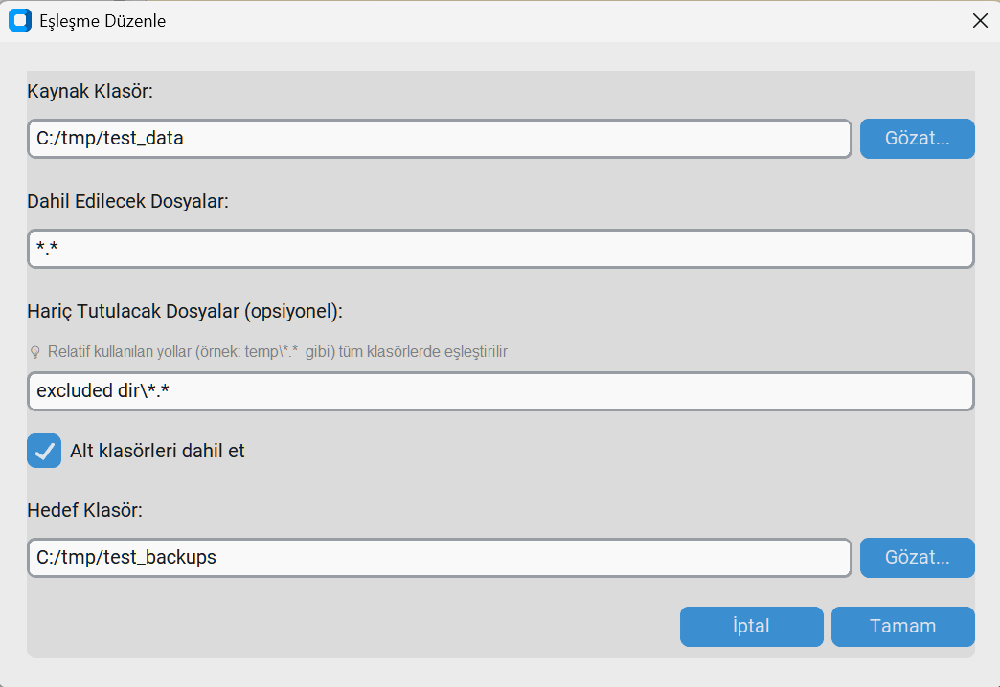
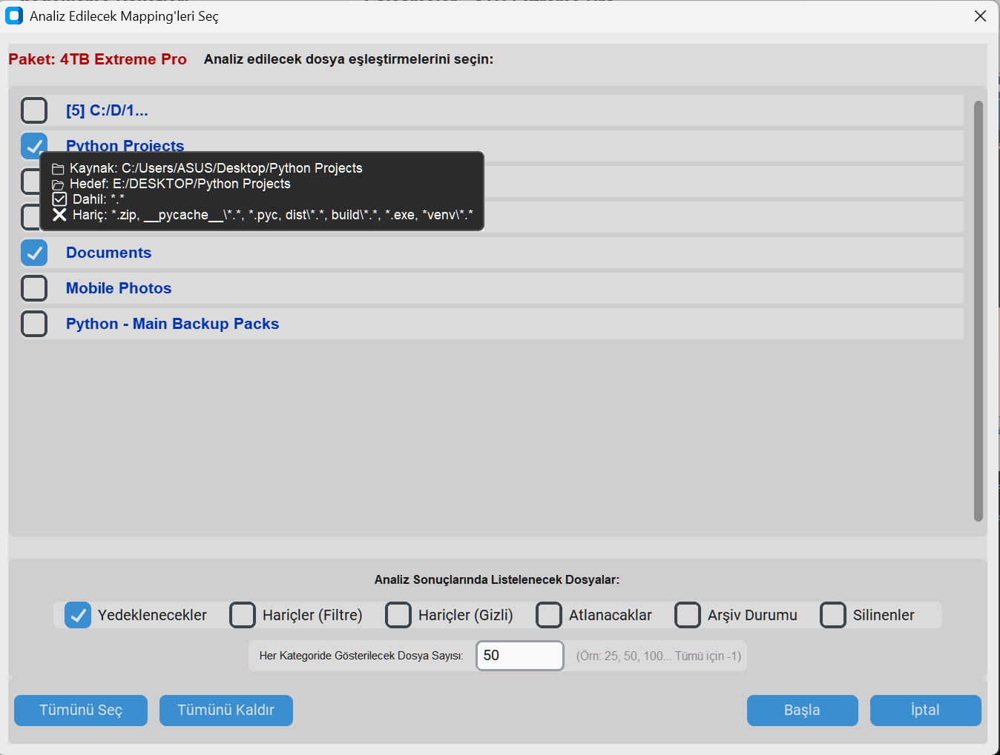
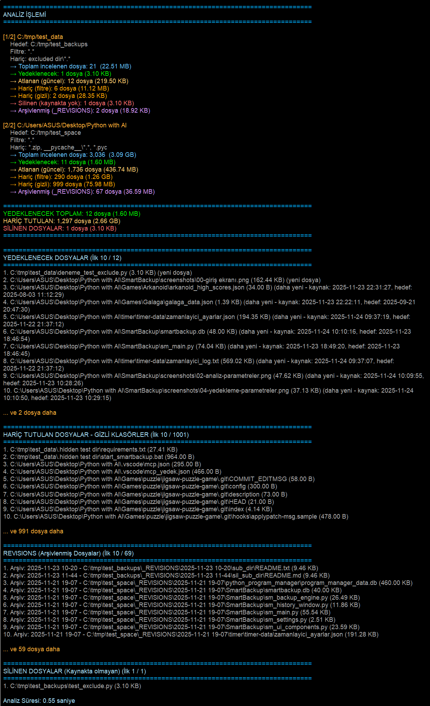
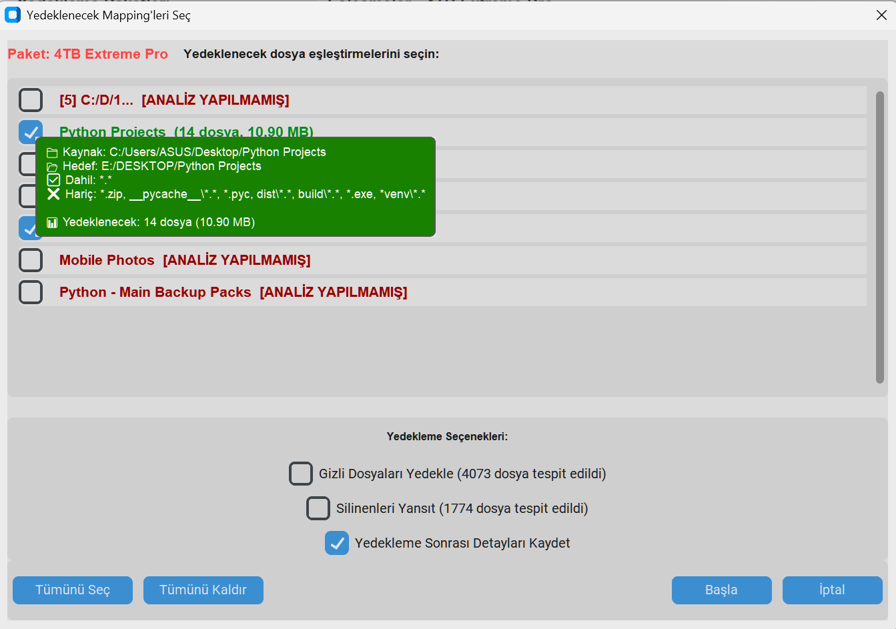
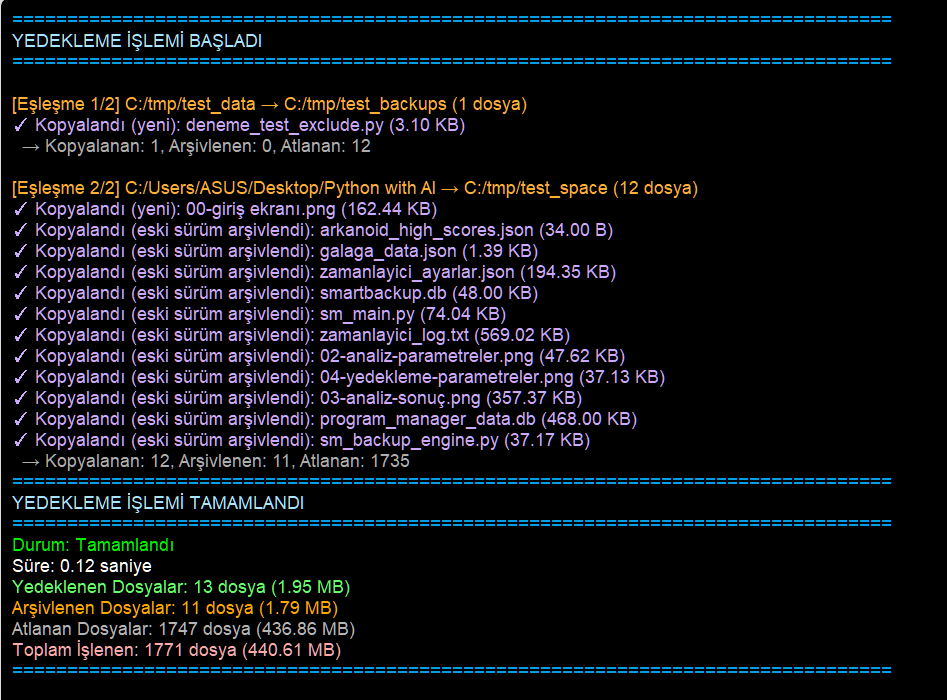
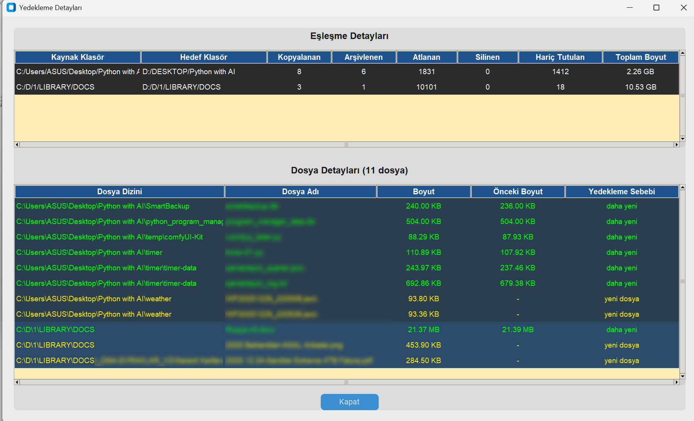
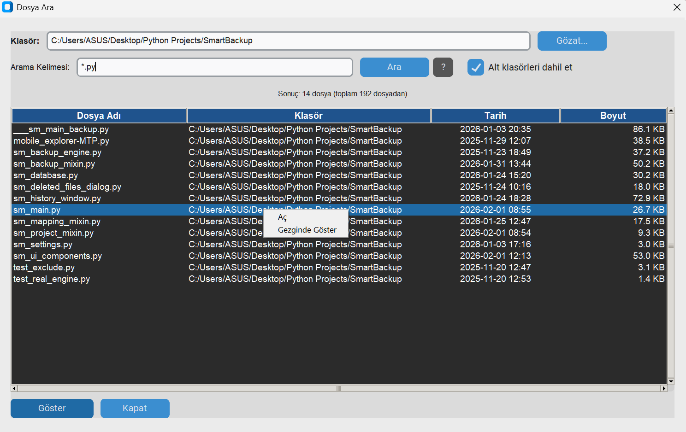
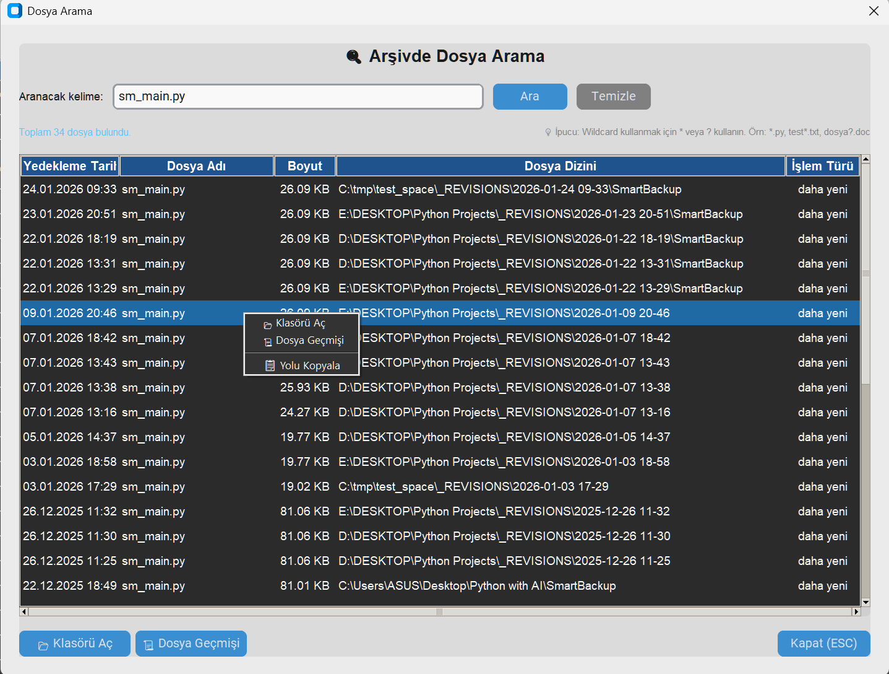

🏠 Smart Backup Nedir?
Smart Backup, dosyalarınızı güvenle yedeklemenizi sağlayan profesyonel bir araçtır. Kaynak klasörlerinizdeki dosyaları hedef klasörlere kopyalar ve eski versiyonları otomatik olarak arşivler.

Smart Backup Ana Ekranı
Proje Bazlı Yönetim
Farklı yedekleme senaryoları için ayrı yedekleme paketleri (projeler) oluşturun ve yönetin.
Akıllı Senkronizasyon
Sadece yeni veya değişen dosyalar kopyalanır, zaman ve alan tasarrufu sağlar.
Otomatik Arşivleme
Güncellenen dosyaların eski versiyonları _REVISIONS klasörüne taşınır.
Modern Arayüz
CustomTkinter ile şık ve kullanıcı dostu tasarım, 3 tema seçeneği.
✨ Özellikler
📋 Eşleştirme Yönetimi

Eşleştirme Tablosu ve Yedekleme Detayları
- Kaynak-Hedef Eşleştirmeleri: Her yedekleme paketi için sınırsız eşleştirme tanımlayabilirsiniz
- Dosya Filtreleme:
*.*,*.doc*,*.py, *.txtgibi desenlerle seçici yedekleme - Hariç Tutma:
*.db,temp\*.*,__pycache__\*.*gibi istenmeyen dosyaları hariç tutma - Alt Klasör Desteği: İsterseniz sadece ana klasör, isterseniz tüm alt klasörler
🔧 Kopyala/Yapıştır Özelliği YENİ
Eşleştirmeler artık yedekleme paketleri arasında kopyalanıp yapıştırılabilir:
- Eşleştirmeye sağ tıklayın ve "Kopyala" seçeneğini tıklayın
- Başka bir yedekleme paketine geçin
- "Yapıştır" butonu otomatik olarak görünür
- Yapıştırılan eşleştirme bu yedekleme paketi için kaydedilir
📐 Ayarlanabilir Splitter YENİ
Eşleştirme tablosu ile yedekleme detayları arasındaki ayırıcı sürüklenebilir. Pozisyon otomatik olarak kaydedilir.
🎨 Tema Desteği
| Tema | Açıklama |
|---|---|
| ☀️ Light | Açık renkli tema - gündüz kullanımı için ideal |
| 🌙 Dark | Koyu renkli tema - göz yorgunluğunu azaltır |
| 🖥️ System | Windows sistem temasını takip eder |
📥 Kurulum
Sistem Gereksinimleri
- Python 3.2 veya üzeri
- Windows işletim sistemi
- En az 5 MB boş disk alanı
Kurulum Adımları
-
Python'un bilgisayarınızda kurulu olduğu varsayılmıştır
Eğer yüklü değilse https://www.python.org/downloads/ adresinden indirin ve bilgisayarınıza kurun. -
Proje dosyalarını indirin
Tüm dosyaları bir klasöre kopyalayın -
Gerekli kütüphaneleri yükleyin
pip install customtkinter
-
Programı başlatın
python sm_main.py
veyastart_smartbackup.batdosyasını çift tıklayın
smartbackup.db veritabanı dosyası otomatik olarak oluşturulur.
📖 Temel Kullanım
1️⃣ Yedekleme Paketi Oluşturma
- Sol panelden Yeni Paket butonuna tıklayın
- Yedekleme paketi adı ve açıklama girin
- Tamam'a tıklayın
2️⃣ Eşleştirme Ekleme
- Sol panelden bir yedekleme paketi seçin
- Yeni Eşleşme butonuna tıklayın
- Kaynak klasörü seçin (Gözat butonu ile)
- Dosya filtresini girin (örn:
*.*veya*.docx) - Hariç tutulacak dosyaları girin (opsiyonel)
- Alt klasörler seçeneğini belirleyin
- Hedef klasörü seçin
- Tamam'a tıklayın
📁 Filtre Örnekleri
| Filtre | Açıklama |
|---|---|
*.* |
Tüm dosyalar |
*.docx |
Sadece Word dosyaları |
*.py, *.txt |
Python ve metin dosyaları |
rapor*.xlsx |
"rapor" ile başlayan Excel dosyaları |
🚫 Hariç Tutma Örnekleri
| Filtre | Açıklama |
|---|---|
*.db |
Tüm .db uzantılı dosyalar |
temp\*.* |
Tüm temp klasörlerindeki dosyalar |
__pycache__\*.* |
Python cache klasörleri |
*.log, *.tmp, *.bak |
Birden fazla uzantı (virgülle ayrılmış) |
🔍 Analiz İşlemi
Analiz işlemi, yedekleme yapmadan önce hangi dosyaların kopyalanacağını, hangilerinin atlanacağını ve hangi dosyaların silinmiş olduğunu gösterir.

Analiz Seçenekleri Penceresi
Analiz Seçenekleri
- ✅ Yedeklenecek dosyalar: Kaynakta yeni veya güncellenmiş dosyalar
- ✅ Atlanan dosyalar: Hedefte zaten güncel olan dosyalar
- ✅ Hariç tutulan (filtre): Kullanıcı filtreleri ile hariç tutulanlar
- ✅ Hariç tutulan (gizli): Sistem tarafından hariç tutulan gizli dosyalar
- ✅ Silinen dosyalar: Kaynakta olmayan hedef dosyalar
- ✅ Arşivlenmiş dosyalar: _REVISIONS klasöründeki eski versiyonlar

Analiz Sonuçları - Detaylı Rapor
💾 Yedekleme İşlemi

Yedekleme Seçenekleri
Yedekleme Adımları
- Yedekle butonuna tıklayın
- Yedeklenecek eşleştirmeleri seçin
- Silinen dosyalar için tercihinizi belirleyin
- Onay verin ve işlemi başlatın
🗑️ Silinen Dosya Yönetimi
Kaynakta artık bulunmayan ancak hedefte mevcut olan dosyalar için özel bir yönetim sistemi bulunur:

Silinen Dosyalar Onay Penceresi
- 📋 Silinen dosyaların detaylı listesi
- ☑️ Tek tek veya toplu seçim
- 🔍 Filtreleme seçenekleri
- 📁 Seçilen dosyalar _REVISIONS klasörüne taşınır

Yedekleme Tamamlandı - Sonuç Raporu
📂 _REVISIONS Klasörü
Güncellenen veya silinen dosyaların eski versiyonları otomatik olarak arşivlenir:
├── dosya1.txt
├── dosya2.doc
└── 📁 _REVISIONS/
└──── 📁 2026-01-03 14-30/
├──── dosya1.txt # eski versiyon
└──── 📁 klasor/
└──── dosya3.pdf # eski versiyon
📜 Yedekleme Geçmişi
Tüm yedekleme işlemleri veritabanında kayıt altına alınır ve geçmiş penceresinden görüntülenebilir.

Yedekleme Geçmişi - Tablo Görünümü
Geçmiş Bilgileri
- 📅 Yedekleme tarihi ve saati
- ⏱️ Analiz ve yedekleme süreleri
- 📊 Kopyalanan, arşivlenen, atlanan, silinen dosya sayıları
- 💾 Boyut istatistikleri
- ✅ Tamamlanma durumu

Geçmiş - Kart Görünümü

Yedekleme Detayları
📜 Dosya Geçmişi (Revision History)
Yedekleme detayları penceresindeki "Dosya Detayları" tablosunda herhangi bir dosyaya sağ tıklayarak o dosyanın geçmiş versiyonlarını görüntüleyebilirsiniz.
Dosya Geçmişini Görüntüleme
- "Geçmiş" butonuna tıklayarak yedekleme geçmişi penceresini açın
- Bir yedekleme kaydına çift tıklayarak detay penceresini açın
- "Dosya Detayları" tablosunda görüntülemek istediğiniz dosyaya sağ tıklayın
- Açılan menüden "📜 Geçmişini Göster" seçeneğini seçin
Dosya Geçmişi Penceresi
Açılan pencerede seçilen dosyanın _REVISIONS klasöründeki tüm eski versiyonları listelenir:
- Revision Tarihi: Dosyanın arşivlendiği tarih ve saat
- Dosya Boyutu: O anki dosya boyutu
- Dosya Konumu: Revision dosyasının tam yolu
Revision Dosyasını Gösterme
Geçmiş penceresinde bir revision'a sağ tıklayıp "📂 Göster" seçeneğini seçerek veya "Göster" butonuna tıklayarak dosyayı Windows Explorer'da seçili olarak açabilirsiniz.
📌 Örnek Kullanım
Diyelim ki rapor.docx dosyasının 3 gün önceki versiyonuna ihtiyacınız var:
- Geçmiş penceresinden ilgili yedekleme kaydını bulun ve çift tıklayın
- Dosya Detayları tablosunda
rapor.docxdosyasını bulun - Sağ tıklayıp "Geçmişini Göster" seçin
- Açılan pencerede 3 gün önceki tarihi olan satırı bulun
- "Göster" butonuna tıklayın - dosya Explorer'da açılır
- Dosyayı kopyalayıp istediğiniz yere yapıştırabilirsiniz
🔎 Dosya Arama
📂 Kaynak Klasörde Arama

Smart Backup'ın güçlü dosya arama özelliği ile kaynak klasörlerde hızlıca dosya bulabilirsiniz.
Arama Penceresini Açma
Yöntem 1: Eşleştirme Üzerinden
- Eşleştirme listesinde bir satıra sağ tık yapın
- "Kaynak Klasörde Ara" seçeneğini seçin
- Arama penceresi otomatik olarak kaynak klasörü yükler
Yöntem 2: Genel Arama
- Ana ekranda "Klasörde Ara" düğmesine tıklayın
- "Gözat..." ile istediğiniz klasörü seçin
- Herhangi bir klasörde arama yapabilirsiniz
Arama Özellikleri
| Özellik | Açıklama |
|---|---|
| Wildcard Desteği | *.txt, test*.py, *2024*.docx gibi kalıplar |
| Çoklu Kelime (AND) | Birden fazla kelime yazarsanız, tüm kelimelerin geçtiği dosyalar bulunur (sıra önemli değil) |
| Sıralı Kelime ("...") | Kelimeleri tırnak içinde yazarsanız, o sırayla geçen dosyalar bulunur (aralarında başka kelimeler olabilir) |
| Hariç Tutma (-) | Bir kelimenin başına - koyarsanız, o kelimeyi içermeyen dosyalar listelenir |
| Türkçe Karakter | İ, I, Ş, Ğ, Ü, Ö, Ç karakterleri için büyük/küçük harf duyarsız arama |
| Alt Klasörler | Alt klasörleri dahil etme/hariç tutma seçeneği |
| Tarih Sütunu | Dosyaların son değiştirilme tarihi görüntülenir |
| Sıralama | Sütun başlıklarına tıklayarak listeyi sıralayabilirsiniz |
| İstatistikler | Bulunan dosya sayısı ve toplam taranan dosya sayısı |
| Yardım (?) | Arama özelliklerini açıklayan yardım mesajı |
Arama Örnekleri
| Arama Terimi | Sonuç |
|---|---|
*.pdf |
Tüm PDF dosyalarını bul |
rapor |
İsminde "rapor" geçen tüm dosyaları bul (rapor.docx, yillik_rapor.pdf, rapor_2024.xlsx) |
mustafa fatura |
Hem "mustafa" hem "fatura" içeren dosyalar (sıra önemli değil) (Mustafa hoca fatura.pdf, fatura-mustafa.pdf) |
"mustafa fatura" |
Önce "mustafa" sonra "fatura" geçen dosyalar (Mustafa hoca fatura.pdf bulunur, fatura-mustafa.pdf bulunmaz) |
rusça -özet |
"rusça" içeren ama "özet" içermeyen dosyalar |
izmir veya İZMİR |
Türkçe karakter farkı olmadan aynı sonucu verir |
2024*.xlsx |
2024 ile başlayan tüm Excel dosyalarını bul |
test?.txt |
test1.txt, test2.txt gibi dosyaları bul |
*backup* |
Adında "backup" geçen tüm dosyaları bul |
Sonuç Bilgileri
Arama sonuçlarında şu bilgiler görüntülenir:
- Dosya Adı: Bulunan dosyanın adı
- Klasör: Dosyanın bulunduğu tam yol
- Tarih: Dosyanın son değiştirilme tarihi
- Boyut: Dosya boyutu (B, KB, MB, GB olarak)
🔃 Sütun Sıralama
Sonuç listesindeki sütun başlıklarına tıklayarak listeyi istediğiniz sütuna göre sıralayabilirsiniz:
- İlk tıklamada A-Z / eskiden yeniye / küçükten büyüğe sıralar (▲)
- İkinci tıklamada Z-A / yeniden eskiye / büyükten küçüğe sıralar (▼)
- Aktif sıralama sütunu başlıkta ok işareti ile gösterilir
Dosyayı Açma
- Çift Tıklama: Sonuç listesinde bir dosyaya çift tıklayarak Windows gezgininde açabilirsiniz
- "Göster" Düğmesi: Seçili dosyayı Windows gezgininde gösterir
🖱️ Sağ Tık Menüsü
Sonuç listesinde bir dosyaya sağ tıkladığınızda aşağıdaki seçenekleri içeren bir menü açılır:
| Seçenek | Açıklama |
|---|---|
| Aç | Dosyayı Windows'daki varsayılan uygulama ile açar (örn: .docx → Word, .pdf → PDF Reader) |
| Gezginde Göster | Dosyayı Windows gezgininde seçili olarak gösterir |
📚 Yedekleme Geçmişinde Arama

Yedekleme geçmişi penceresinde "🔍 Ara" butonuna tıklayarak veritabanındaki tüm yedeklenmiş dosyalar arasında arama yapabilirsiniz. Böylece bir dosyanın geçmiş versiyonlarının listesine erişebilirsiniz
Arama Penceresini Açma
- "Geçmiş" butonuna tıklayarak yedekleme geçmişi penceresini açın
- Alt kısımdaki "🔍 Ara" butonuna tıklayın
- Açılan arama penceresinde dosya adını veya wildcard pattern girin
- Enter tuşuna basın veya "Ara" butonuna tıklayın
Arama Türleri
| Arama Türü | Açıklama | Örnek |
|---|---|---|
| Normal Arama | Girilen kelimeyi içeren tüm dosya isimleri | rapor → rapor.docx, yillik_rapor.pdf, rapor_2024.xlsx |
| Wildcard Arama | * ve ? karakterleri ile pattern araması |
*.py → tüm Python dosyaları |
Wildcard Örnekleri
| Pattern | Açıklama |
|---|---|
*.py |
Tüm Python dosyaları |
*.doc* |
Word dosyaları (.doc, .docx) |
rapor*.xlsx |
"rapor" ile başlayan Excel dosyaları |
test?.txt |
"test" + tek karakter + .txt uzantılı dosyalar |
*backup* |
Adında "backup" geçen tüm dosyalar |
Arama Sonuçları
Sonuç tablosunda aşağıdaki bilgiler görüntülenir:
- Yedekleme Tarihi: Dosyanın yedeklendiği veya revizyona aktarıldığı tarih
- Dosya Adı: Dosyanın adı
- Boyut: Dosyanın o kayıttaki boyutu
- Dosya Dizini: Dosyanın bulunduğu hedef klasör yolu
- İşlem Türü: Yedekleme sebebi (Yeni Dosya, Daha Yeni, vb.)
Sağ Tık Menüsü
- 📂 Klasörü Aç: Dosyanın yedeklendiği hedef klasörü Windows Explorer'da açar
- 📜 Dosya Geçmişi: Dosyanın tüm revision geçmişini görüntüler
- 📋 Yolu Kopyala: Dosyanın tam yolunu panoya kopyalar
Ek Özellikler
- 📊 Sütun Sıralama: Sütun başlıklarına tıklayarak artan/azalan sıralama
- 🖱️ Çift Tıklama: Dosyanın hedef klasörünü Windows Explorer'da açar
- ⌨️ Klavye Desteği: Enter ile arama, ESC ile pencereyi kapatma
- 🧹 Temizle Butonu: Arama alanını ve sonuçları temizler
🧩 Modül Yapısı
Smart Backup, Mixin Pattern kullanarak modüler bir yapıya sahiptir. Bu sayede kod bakımı ve genişletme kolaylaşır.
│
├── sm_main.py # Ana uygulama (425 satır)
├── sm_project_mixin.py # Proje işlemleri (190 satır)
├── sm_mapping_mixin.py # Eşleştirme işlemleri (355 satır)
├── sm_backup_mixin.py # Yedekleme işlemleri (920 satır)
├── sm_database.py # Veritabanı yönetimi
├── sm_settings.py # Ayarlar yönetimi
├── sm_backup_engine.py # Yedekleme motoru
├── sm_ui_components.py # UI bileşenleri
├── sm_history_window.py # Geçmiş penceresi
├── sm_deleted_files_dialog.py # Silinen dosyalar
└── sm_help.html # Bu yardım dosyası
Modül Açıklamaları
| Modül | Sorumluluk |
|---|---|
sm_main.py |
Ana pencere, widget oluşturma, tema ve splitter yönetimi |
sm_project_mixin.py |
Proje CRUD işlemleri, çoğaltma, context menü |
sm_mapping_mixin.py |
Eşleştirme CRUD, kopyala/yapıştır, klasör açma |
sm_backup_mixin.py |
Hesaplama, analiz, yedekleme, geçmiş görüntüleme |
sm_backup_engine.py |
Dosya karşılaştırma, kopyalama, filtreleme mantığı |
⌨️ Klavye Kısayolları
| Kısayol | İşlev |
|---|---|
| ESC | Aktif pencereyi kapat / İşlemi iptal et |
| Çift Tıklama | Eşleştirmeyi düzenle / Geçmiş detaylarını göster |
| Sağ Tık | Context menüyü aç |
🖱️ Sağ Tık Menüleri
Paket Menüsü
- 📝 Paket Düzenle
- 🗑️ Paket Sil
- 📋 Paket Çoğalt
Eşleştirme Menüsü
- 📝 Eşleştirme Düzenle
- 🗑️ Sil
- 📋 Çoğalt
- 📋 Kopyala
- 📂 Kaynak Klasörü Aç
- 📂 Hedef Klasörü Aç
- 📂 Revision'ları Aç
🔧 Sorun Giderme
❌ Program açılmıyor
- Python 3.7+ sürümünü kullandığınızdan emin olun
pip install customtkinterkomutu ile kütüphaneyi yükleyin- Komut satırından
python sm_main.pyçalıştırarak hata mesajını görün
❌ Veritabanı hatası
smartbackup.dbdosyasını silin- Program yeniden başlatıldığında veritabanı otomatik oluşturulacaktır
❌ Yedekleme çalışmıyor
- Kaynak ve hedef klasörlerin var olduğundan emin olun
- Klasörlere yazma izniniz olduğunu kontrol edin
- Dosya filtresinin doğru formatta olduğunu kontrol edin
❌ Harici diske erişilemiyor
- USB sürücünün bağlı olduğundan emin olun
- Disk harfinin değişmediğini kontrol edin
- Program, erişilemeyen diskleri otomatik olarak tespit eder ve uyarı verir
.py
dosyalarının mevcut olduğundan emin olun.
ℹ️ Hakkında
| Özellik | Değer |
|---|---|
| 👨💻 Yazar | Dr. Mustafa Afyonluoğlu |
| 📅 Tarih | 3 Ocak 2026 |
| 📦 Versiyon | 2.0 |
| 🖥️ Platform | Windows 11 |
| 🎨 UI Framework | CustomTkinter |
| 💾 Veritabanı | SQLite3 |
| 🏗️ Mimari | Mixin Pattern |